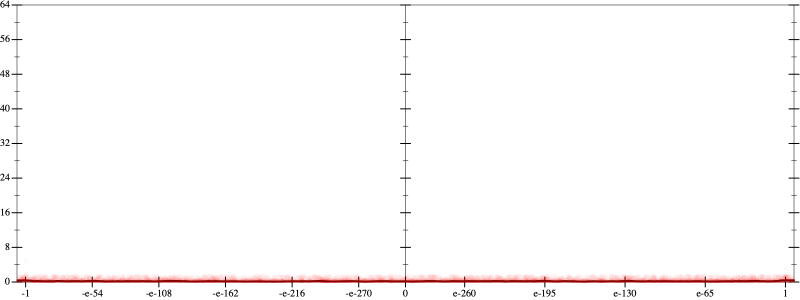
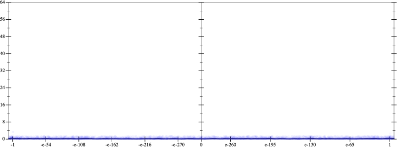
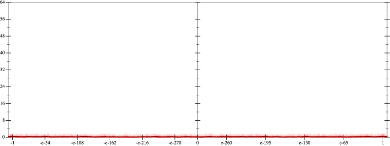
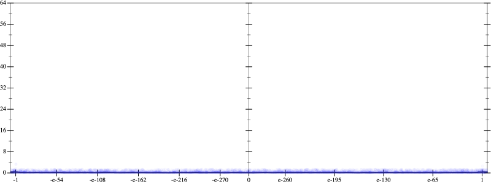
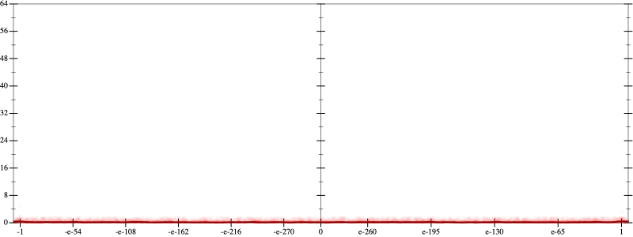
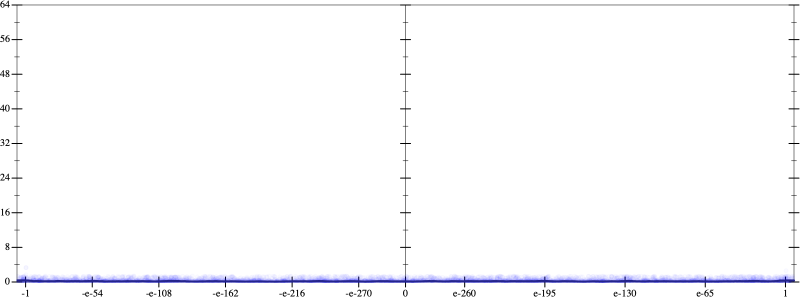

Error
 
Bits error versus x
Bits error versus x
Results
Initial program 0.2
rmApplied pow30.2
Time bar (total: 41.0s)Debug log
herbie shell --seed 1610567070
(FPCore (x)
:name "3"
:pre (and (>= x -10000000.0) (<= x 10000000.0))
(+ (* -12.0 x) (* 8.0 (* (* x x) x))))